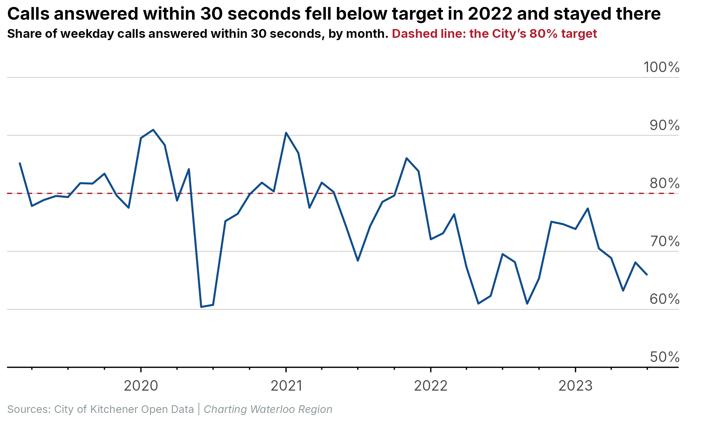
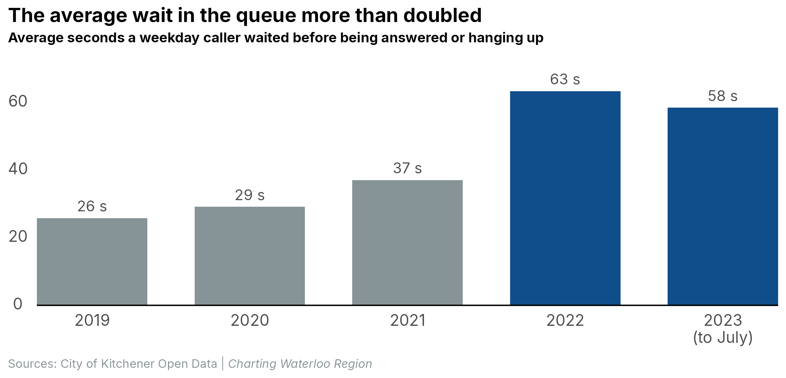
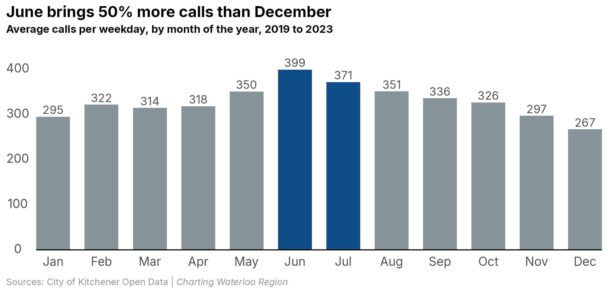

| Column | Type | Description | Units | Values |
|---|---|---|---|---|
| queue_daily | ||||
| date | date | Calendar date | YYYY-MM-DD | 2019-03-01 to 2023-07-30 |
| year | number | Calendar year | 2019 to 2023 | |
| month | text | Three-letter month abbreviation (Jan to Dec) | Mar; Apr; May; ... (12 distinct values) | |
| year_month | date | First day of the month the date falls in | YYYY-MM-DD | 2019-03-01 to 2023-07-01 |
| day_of_week | text | Three-letter day of the week (Mon to Sun) | Fri; Sat; Sun; ... (7 distinct values) | |
| holiday | true/false | TRUE if the date is an Ontario statutory holiday | TRUE / FALSE | |
| weekend_or_holiday | true/false | TRUE if the date is a Saturday or Sunday or a statutory holiday | TRUE / FALSE | |
| calls_presented | number | Calls that entered the queue | calls | 24 to 1925 |
| avg_queue_time | number | Average time callers spent waiting in the queue (answered and abandoned calls) | seconds | 5 to 832 |
| max_queue_time | number | Longest single wait in the queue that day | seconds | 10 to 5908 |
| calls_handled | number | Calls answered by an agent | calls | 11 to 1835 |
| avg_speed_of_answer | number | Average time answered calls waited before an agent picked up | seconds | 4 to 1263 |
| avg_handle_time | number | Average length of an answered call from answer to hang-up including hold time | seconds | 51 to 231 |
| max_handle_time | number | Longest single call that day | seconds | 79 to 5001 |
| calls_abandoned | number | Calls where the caller hung up while waiting in the queue | calls | 0 to 480 |
| target_seconds | number | The service-level target the City measures against (30 on every day) | seconds | 30 to 30 |
| answered_within_target | number | Calls answered within the 30-second target | calls | 10 to 413 |
| abandoned_within_target | number | Calls abandoned before the 30-second target had elapsed | calls | 0 to 322 |
| pct_handled_within_target | number | answered_within_target as a share of calls_handled | percent (0 to 100) | 14.9 to 100 |
| pct_within_target_excl_abandoned | number | answered_within_target as a share of calls_presented minus calls_abandoned | percent (0 to 100) | 8.8 to 100 |
| pct_within_target_abandoned_positive | number | answered_within_target plus abandoned_within_target as a share of calls_presented | percent (0 to 100) | 15.8 to 100 |
| pct_answered_within_target | number | answered_within_target as a share of calls_presented; the measure used in the post, where an abandoned call counts as a miss | percent (0 to 100) | 8.2 to 100 |
| percentage_of_calls_handled | number | calls_handled as a share of calls_presented | percent (0 to 100) | 45.8 to 100 |
| percentage_of_calls_abandoned | number | calls_abandoned as a share of calls_presented | percent (0 to 100) | 0 to 54.2 |
| Generated from the data with R/data_bundle.R; descriptions from data/dictionary.csv | ||||
Call the City of Kitchener on a weekday and the odds of someone picking up within half a minute have fallen from 80% in 2019 to 69% in 2023. The average wait in the queue went from 26 seconds to 58 seconds. Call volumes barely moved over the same period, so the slowdown is not a story about more people phoning in.
The 80% target held until 2021, then slipped
The City measures itself against a common contact-centre yardstick: answer 80% of calls within 30 seconds. On weekdays in 2019 it met that target almost exactly. Through the first two pandemic years it stayed close, with the best months of all in the quiet January and February of 2020 and 2021, when more than 90% of calls were answered on time.
The break came in 2022. Every month that year was below target, and June 2020 was the low point, with 60% of calls answered within 30 seconds. The first seven months of 2023 look much like 2022.

The average wait more than doubled
Averages hide a lot in a phone queue, since most calls are answered quickly and a few wait a very long time. Even so, the direction is clear. A weekday caller in 2019 waited 26 seconds on average. In 2022 that was 63 seconds, and the first seven months of 2023 averaged 58 seconds.
Volume does not explain it. The centre handled 329 calls on a typical weekday in 2019 and 351 in 2023, a rise of 7%. The data says nothing about staffing, which is the obvious place to look next.

Early summer is the crunch
Whatever the year, the phones are busiest in June and quietest in December, and the answer rate follows the volume: over the whole period, 69% of June calls were answered on time against 81% in January. Property tax bills, summer recreation registration and moving season all land in the same few weeks. A centre that just meets its target in a quiet month will miss it in a busy one unless staffing moves with the calendar.

Data and methods
The City of Kitchener publishes daily metrics for its main phone queue on its open data portal. This post uses the export covering 26 February 2019 to 30 July 2023, the full range available when it was downloaded in February 2025. Days with an incomplete or duplicated set of metrics (14 of about 1,600) and the partial first month were dropped.
All figures are weekdays excluding Ontario statutory holidays. Weekend and holiday volumes run at roughly 31% of a weekday, on a reduced service, and would flatter every average.
“Answered within 30 seconds” is the share of all calls presented that an agent picked up inside the target, so a caller who hung up while waiting counts as a miss. The City also reports three gentler versions of the same measure, all included in the download below. Waits are the daily average queue time weighted by the number of calls that day.
NoteReproducibility and data download
Code and data for this post: posts/kitchener-phone-wait-times/ on GitHub. See Reproduce a post for the steps.
Download the data: kitchener-phone-wait-times-data-v1.zip holds every table used in this post as CSV and Parquet files, an Excel workbook, the data dictionary below, and a README with sources and licences.
R version: R version 4.5.3 (2026-03-11 ucrt)
OS: Windows 11 x64 (build 26200)
Rendered: 2026-09-09
Quarto: 1.9.38
package version date source
arrow 25.0.1 2026-08-23 CRAN (R 4.5.3)
conflicted 1.2.0 2023-02-01 CRAN (R 4.2.3)
dplyr 1.2.1 2026-04-03 CRAN (R 4.5.2)
forcats 1.0.1 2025-09-25 CRAN (R 4.5.3)
ggplot2 4.0.3 2026-04-22 CRAN (R 4.5.3)
ggtext 0.2.0 2026-08-28 CRAN (R 4.5.3)
gt 1.3.0 2026-01-22 CRAN (R 4.5.3)
gtExtras 0.6.2 2026-01-17 CRAN (R 4.5.3)
here 1.0.2 2025-09-15 CRAN (R 4.5.3)
janitor 2.2.1 2024-12-22 CRAN (R 4.5.3)
lubridate 1.9.5 2026-02-04 CRAN (R 4.5.3)
patchwork 1.3.2 2025-08-25 CRAN (R 4.4.3)
purrr 1.2.2 2026-04-10 CRAN (R 4.5.2)
readr 2.2.0 2026-02-19 CRAN (R 4.5.3)
scales 1.4.0 2025-04-24 CRAN (R 4.5.3)
stringr 1.6.0 2025-11-04 CRAN (R 4.5.3)
tibble 3.3.1 2026-01-11 CRAN (R 4.5.2)
tidyr 1.3.2 2025-12-19 CRAN (R 4.5.3)
tidyverse 2.0.0 2023-02-22 CRAN (R 4.5.2)Reusing this post
The text and charts in this post are free to copy, share, or republish, including in the news, as long as you credit Charting Waterloo Region and link to the post (Creative Commons CC BY 4.0). The code is MIT licensed; data stays under the licence of its original source, listed above.(View License)